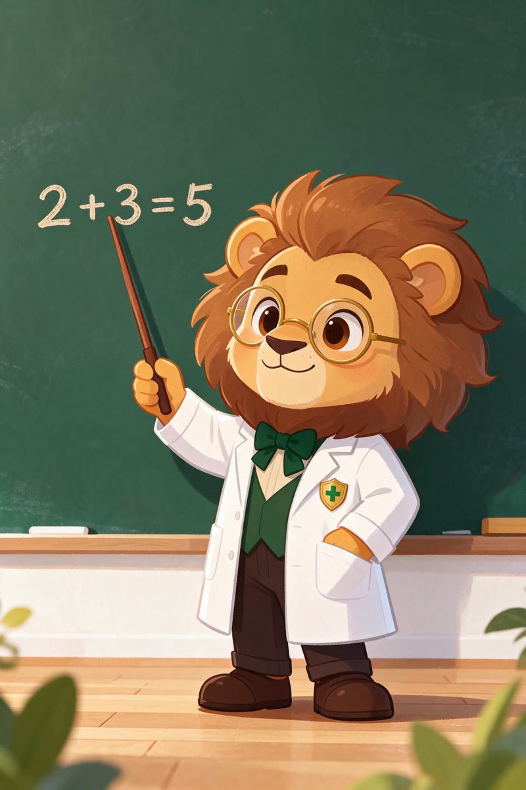
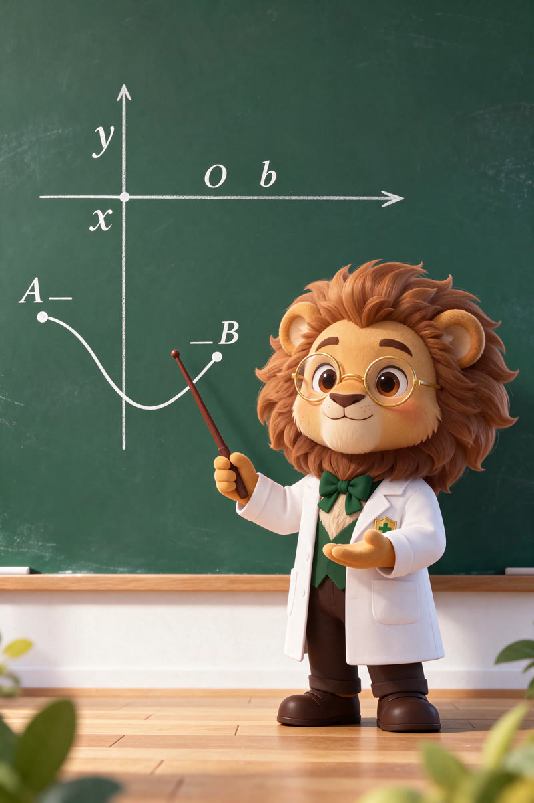
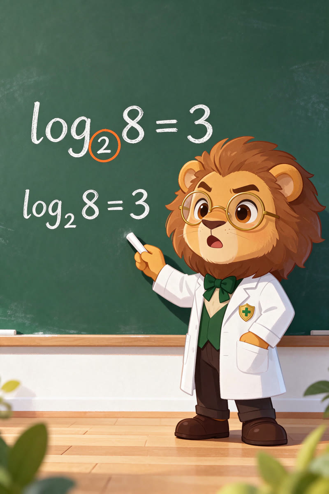

狮子博士拆题
对数函数 · QB函数新定义
题目越花哨，内核越简单
第 1 幕 · 开场
今天两道题，一个比一个阴。第一道藏了个换元陷阱，第二道直接甩个新定义——QB函数，听着跟QQ会员似的。别慌，跟博士走，拆给你看。
第 2 幕 · 第20(1) 直接代入
第一题，两个对数相乘，看着吓人。但第(1)问只让你比 f(2) 和 f(16)——别想复杂，直接代入算！
f(2) = −2loga2 + 4
f(16) = 4loga2 − 2

第 3 幕 · 第20(1) 结论
要 f(2) > f(16)，一移项：loga2 < 1。a>1 时 a>2；0<a<1 时恒成立。
答案：a ∈ (0,1) ∪ (2,+∞)
第 4 幕 · 第20(2) 换元
第(2)问才是重头戏。a=2，y 里又是 x 又是 m，看着乱。看见 log₂x 就换元！注意——换元必须换定义域，这是扣分重灾区！
令 t = log2x
x ∈ [1,8] ⟹ t ∈ [0,3]

第 5 幕 · 第20(2) 比端点
换完 y = t² − (5+m)t + 6。二次函数最值没学过？博士教你比端点——闭区间上，最值就在端点。
t=0 → y=6 · t=3 → y=−3m
分界 m=−2：
m≥−2 取 6 · m<−2 取 −3m
第 6 幕 · 第21题 新定义
第二题，新定义题，看着最吓人，其实就一句话。
对任意 x, y：
f(x) + f(y) ≥ f(xy)
第 7 幕 · 第21(1) 找反例
判断 f(x)=−x² 是不是 QB。别硬证，找反例！x=y=1。
f(1)+f(1) = −2 · f(1) = −1
−2 ≥ −1 ？假 ⟹ 不是 QB

第 8 幕 · 第21(2) 对数单调性
g(x) = log12(ax)，套定义约掉，剩下 log12a ≥ 0。底数 12 < 1，对数递减。
答案：0 < a ≤ 1
第 9 幕 · 第21(3) 充要条件
h(x)=aˣ 是 QB，当且仅当 a=1。充分性显然；必要性反证排除 a>1 和 0<a<1。
h(x) = aˣ 是 QB ⟺ a = 1
第 10 幕 · 四条干货
今天四条干货，收好：
- ① 换元必须换定义域
- ② 比端点求最值
- ③ 新定义题按定义走，别套旧结论
- ④ 判断「不是」用反例，证明「充要」用反证